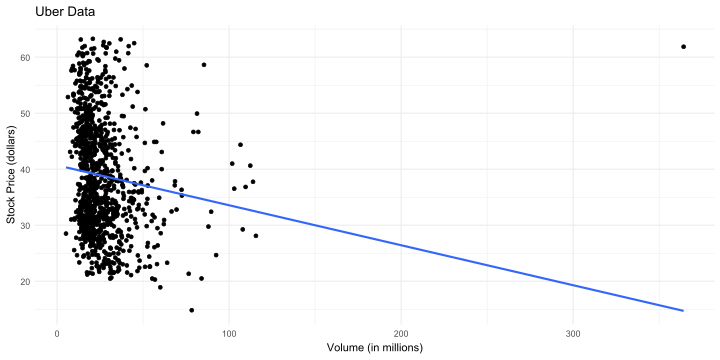
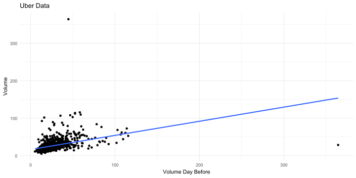

## ------------------------------
## Análisis de Spotify
## Autor(es):
## ------------------------------
### Ejercicio 1Análisis de Regresión - Precio de Acciones
📅 Fecha Límite: Viernes 4 de abril, 6:00 p.m.
Formato de Entrega: Me envían el documento salida en pdf si utilizan Quarto o el R Script al correo con el formato usual nombre_apellido.R. Si realizan el trabajo en parejas, nombren el archivo nombre1_apellido1_nombre2_apellido2.R. Antes de enviar el archivo, asegúrense de que su código se ejecuta correctamente en un nuevo R Script limpio.
Criterios de evaluación:
✔ Código correcto y bien estructurado: si el código no ejecuta, descuento la mitad del punto.
✔ Gráficos generados correctamente: Uso de ggplot2 con etiquetas claras y colores adecuados.
✔ Interpretación y análisis: Respuesta clara a las preguntas en comentarios y que sea concisa. Si su respuesta tiene más de 3 líneas es muy larga.
✔ Formato y organización: Código limpio, comentado y con títulos adecuados en el documento.
Descripción del Dataset
El conjunto de datos stock_data contiene información sobre el precio y el volumen diario de las acciones de varias empresas entre enero de 2020 y diciembre de 2023. A continuación, se detallan las principales variables:
symbol: sigla de la empresa en Yahoo Finacedate: fechavolume: volumen diario en millones de acciones negociadasvolume_lag: el volumen del día anterioradjusted_close: el precio de la acción al cerrar el mercado ese día (stock price)
Ejercicio 0
Lo ideal es que me entreguen el archivo en pdf de la salida de Quarto (en el correo les adjunto un archivo plantilla.qmd para que lo usen como plantilla). Si prefieren un R Script, utilicen el siguiente formato:
Carguen los paquetes tidyverse y broom para este ejercicio. El paquete broom se usará para la función tidy, que permite visualizar los resultados de la regresión de manera ordenada.
Luego, importen el archivo stock_data:
stock_data <- read.csv("stock_data.csv")Recuerden establecer el directorio de trabajo antes de importar el archivo o asegurarse de que el archivo esté en la misma carpeta que el documento de Quarto (.qmd).
Ejercicio 1
Elijan una de las siguientes empresas del conjunto de datos stock_data—Amazon (AMZN), Meta (META), NVIDIA (NVDA), Apple (AAPL), Tesla (TSLA), Netflix (NFLX) o Microsoft (MSFT)—y repitan el análisis gráfico y de regresión que hice para UBER.
Análisis Gráfico

Basados en el gráfico y en la correlación:
cor(uber_data$adjusted_close, uber_data$volume, use = "complete.obs")[1] -0.1257336Podemos decir que existe una relación negativa entre el precio ajustado de la acción (adjusted_close) y el volumen de acciones (volume), pero no es fuerte, ya que el coeficiente de correlación es -0.126, un valor cercano a 0.
Regresión
uber_model <- lm(adjusted_close ~ volume, data = uber_data)
tidy(uber_model)# A tibble: 2 × 5
term estimate std.error statistic p.value
<chr> <dbl> <dbl> <dbl> <dbl>
1 (Intercept) 40.7 0.568 71.7 0
2 volume -0.0714 0.0178 -4.02 0.0000636La línea de regresión en este caso es:
\[\widehat{\text{Stock Price}}=40.7 - 0.071 \times \text{Volume}\]
La variable adjusted_close está medida en dólares, mientras que volume está en millones de acciones. Por lo tanto, en promedio, un millón de acciones más vendidas está asociado con una reducción de 0.071 dólares en el precio ajustado de la acción de Uber.
Ejercicio 2
Para la misma empresa que eligieron en el Ejercicio 1, repitan el análisis gráfico y de regresión que hice para UBER en este ejercicio.
Análisis Gráfico

Basados en el gráfico y en la correlación:
cor(uber_data$volume, uber_data$volume_lag, use = "complete.obs")[1] 0.377011Podemos decir que existe una relación positiva entre el volumen de acciones (volume) y el volumen de acciones del día anterior (volume_lag), pero no es fuerte, ya que el coeficiente de correlación es 0.377, un valor cercano a 0.
Regresión
uber_model_2 <- lm(volume ~ volume_lag, data = uber_data)
tidy(uber_model_2)# A tibble: 2 × 5
term estimate std.error statistic p.value
<chr> <dbl> <dbl> <dbl> <dbl>
1 (Intercept) 16.4 0.935 17.6 1.33e-60
2 volume_lag 0.377 0.0292 12.9 2.70e-35La línea de regresión en este caso es:
\[\widehat{\text{Volume}}=16.4 + 0.377 \times \text{Volume Day Before}\]
Dado que ambas variables (volume y volume_lag) están en millones de acciones, la ecuación indica que, en promedio, un aumento de 1 millón de acciones vendidas el día anterior está asociado con un aumento de 0.377 millones de acciones en el volumen de hoy.
Ejercicio 3
Dado lo que vimos en clase, ¿cómo se interpretan los interceptos en ambos ejercicios? ¿Tiene sentido su interpretación?